3D Machining
Assignment
We had to create a design in Fusion 360, 50mm by 50mm. Due to time constraints, I decided to create something simple. For the design, I wanted to make a flower design. So I started by making the base first before the actual design of the flower. 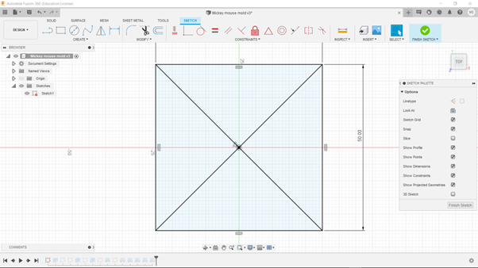 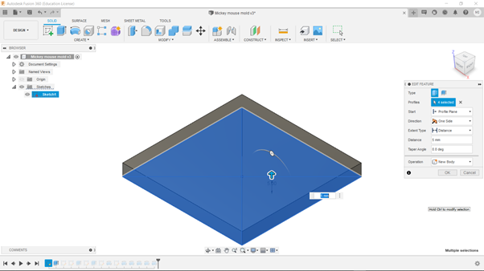
As for the walls, I designed them to be slanted so that it would be easier to remove the mold later on. 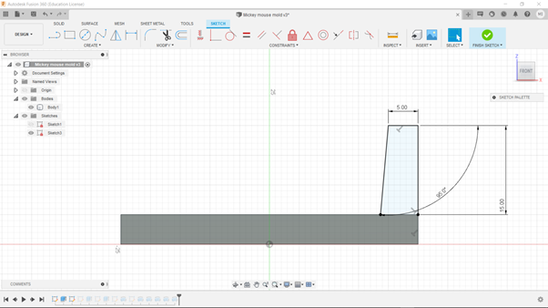 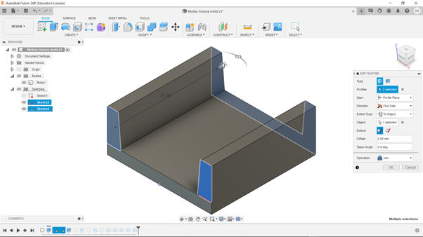
Moving onto the design of the flower itself. I started by sketching the main circle before revolving it 180 degrees to form a semi-sphere. 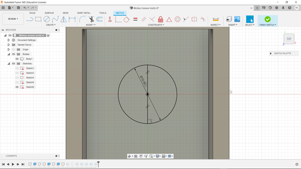 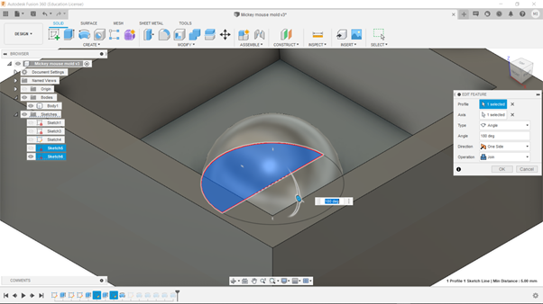
As for the petals, I sketched 5 circles that surrounded the main circle equally. I did so by using the circle pattern function. I then revolved them, similarly to the main circle. 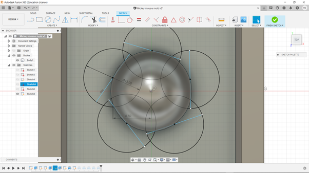 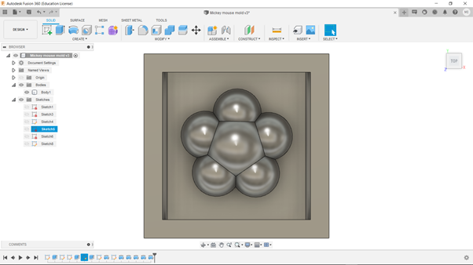
Afterwards I had to smoothen out the lines between the shapes. This is due to the tool being 3mm in diameter. I did so by simply using the fillet function. 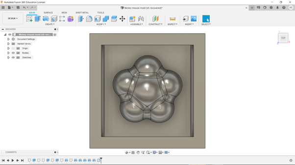
Next, I did the toolpath for the milling of the mold. I had to do two separate toolpaths, one for the flower, and one for the sloping sides. 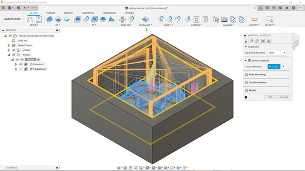 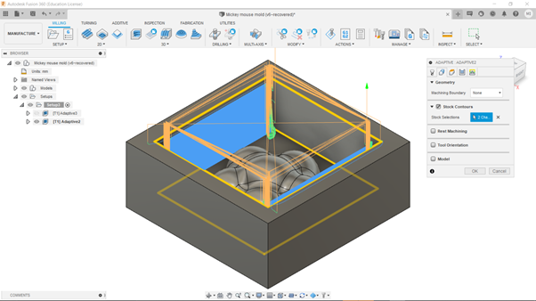
Here are the settings that I used. Usually we would use 0.3mm for the fine step down but since I wanted to mill the mold in one go, I decided to make it cut finer at 0.1mm. 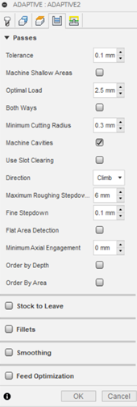
Moving on, I used the 2d cnc machine to mill the mold. To do so, I loaded the nc file generated from fusion and used the 3mm flat endmill for the milling process. I did have to consistantly vacuum up the dust from the foam to not make a mess. 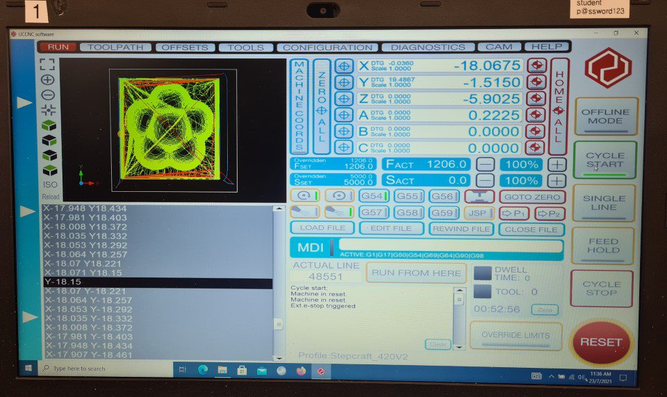 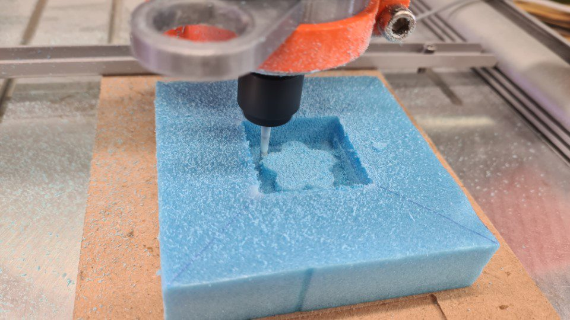
As you can see here it turned out great but it took a pretty long time to complete. About 1hr, due to it being a finer and single cut. I will try to tweak the toolpath next time so that the toolpath will not cut the sides of the top. Overall, it was pretty good for my first time trying 3d machining. 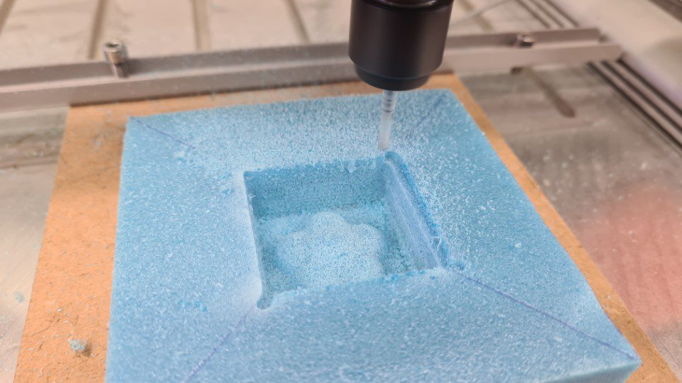 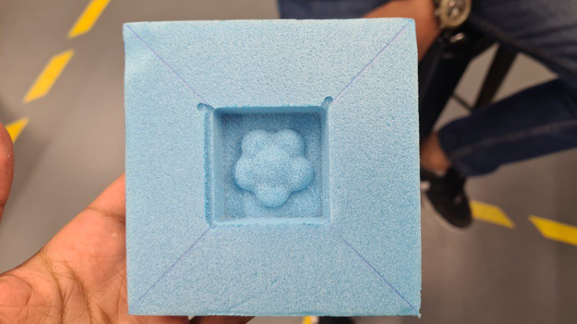